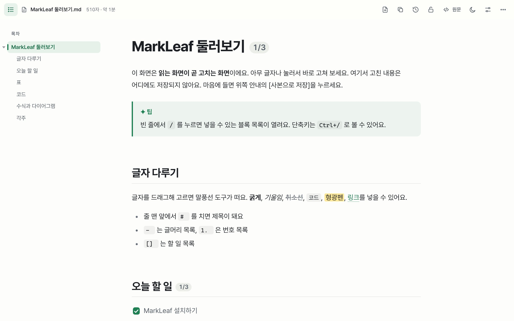
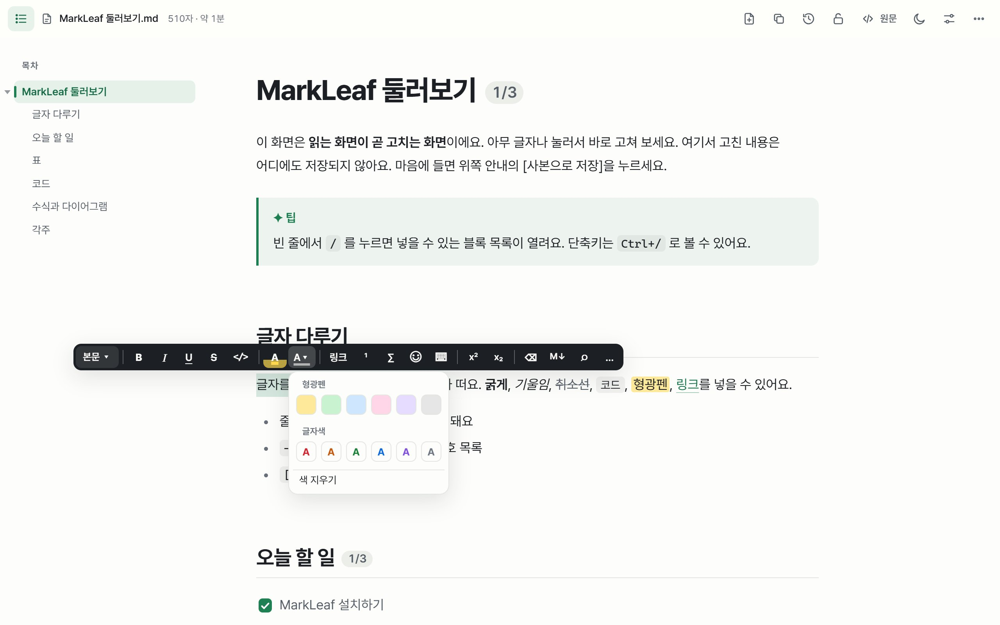
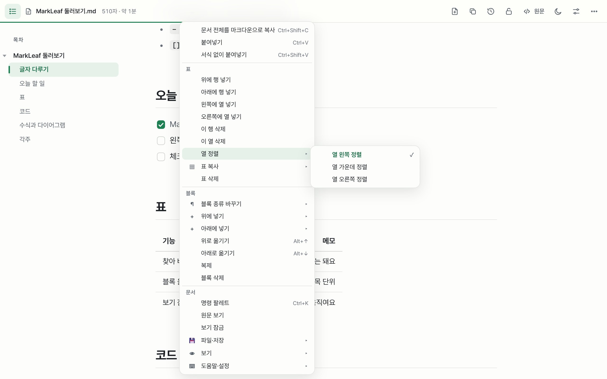
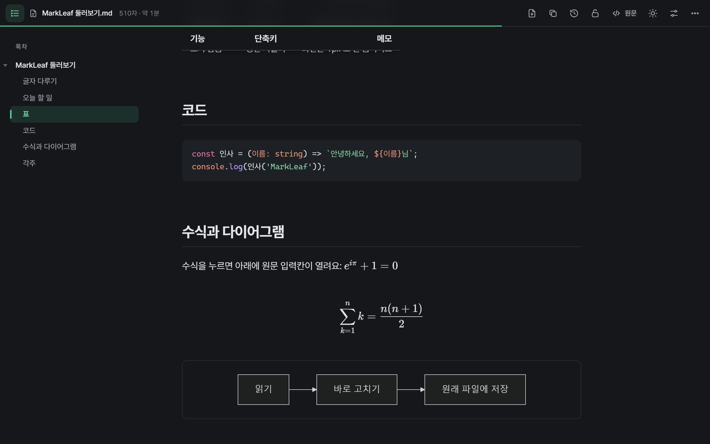
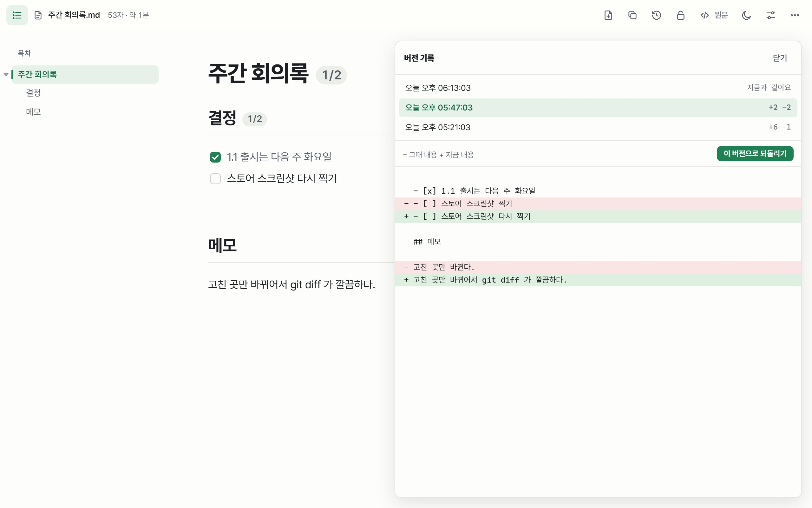

슬래시 명령
/ 하나로 제목·할 일·표·알림 상자·토글·수식·다이어그램·이모지.
MarkLeaf 는 크롬에서 연 마크다운 파일을 읽기 좋은 문서로 바꿔 줍니다. 읽던 자리를 누르고 바로 고치면, 손댄 곳만 원래 파일에 저장됩니다.
1.1 출시 준비 끝. 고친 줄만 바뀝니다.
/ 를 누르면 블록 목록| 영역 | 담당 |
|---|---|
| 문서 | 민아 |
움직이는 데모입니다. 실제 파일도 크롬에서 이렇게 열립니다.
이런 곳에서
대부분의 마크다운 도구는 원문과 미리보기로 화면을 나눕니다. MarkLeaf 는 화면이 하나이고, 그 화면이 둘 다입니다.
.md 파일을 탭에 끌어다 놓거나 GitHub Raw 문서를 여세요. 제목·표·코드·수식·다이어그램이 바로 그려집니다.
읽던 자리에서 고칩니다. / 로 블록, 글자를 고르면 툴박스, 오른쪽 클릭은 상황에 맞는 메뉴.
고친 곳만 다시 씁니다. 띄어쓰기·목록 기호·줄바꿈은 원래 그대로 남습니다.
필요할 때 나타나고, 필요 없을 때는 비켜섭니다.





/ 하나로 제목·할 일·표·알림 상자·토글·수식·다이어그램·이모지.
Ctrl P 빠른 열기(초성 검색), 폴더 전체 찾아 바꾸기, [[링크]], 백링크, 깨진 링크 점검.
라이트·다크를 갖춘 테마 5종, 강조색, 글꼴·크기·줄 간격·본문 폭, 커스텀 CSS.
입력을 멈추면 자동 저장. 다른 편집기가 파일을 바꿨다면 덮어쓰지 않고 합치거나 비교를 보여 줍니다.
웹·워드·구글 문서·노션에서 붙여넣으면 정돈된 마크다운이 됩니다.
인쇄용 PDF, 그대로 열리는 HTML 파일 하나, 기본 템플릿 6종과 내 템플릿.
--- 로 나눈 슬라이드 발표, 기기 안 음성으로 듣기, 집중 모드로 본문만 보기.
모든 동작에 단축키가 있고, 마우스 없이도 편집할 수 있습니다. Ctrl / 로 전체 목록을 보세요.
MarkLeaf 는 브라우저 안에서만 동작합니다. 가입할 것도, 보낼 것도 없습니다.
읽기·고치기·저장·버전 기록이 모두 이 기기 안에서 이뤄집니다.
사용 기록, 쿠키, 외부 스크립트가 확장 안에 없습니다.
글꼴·수식·다이어그램 라이브러리를 확장에 담아 인터넷이 없어도 됩니다.
| 기능 | 읽기 전용 뷰어 | 분할 미리보기 편집기 | MarkLeaf |
|---|---|---|---|
| .md 를 깔끔한 문서로 보기 | |||
| 읽는 화면에서 바로 고치기 | |||
| 크롬 안에서 바로 열기 | |||
| 원래 파일에 저장 | |||
| 고친 줄만 다시 쓰기 | |||
| 이 컴퓨터에 버전 기록 |
각 종류의 도구에서 흔한 경우를 기준으로 비교했습니다. 제품마다 다를 수 있습니다.
MarkLeaf 를 설치하고 크롬 확장 프로그램 관리 → MarkLeaf 세부정보에서 "파일 URL에 대한 액세스 허용"을 켜세요. 설치 후 열리는 안내 페이지에 버튼이 있습니다. 그다음 .md 파일을 크롬 창에 끌어다 놓거나 file:/// 주소로 열면 됩니다.
네. 글자를 누르고 고치면 됩니다. 처음 저장할 때 크롬이 파일을 고르거나 폴더를 허용하라고 묻고, 그다음부터는 입력을 멈추면 자동으로 저장합니다. 고친 부분만 바뀝니다.
망가지지 않습니다. 손대지 않은 곳은 목록 기호·띄어쓰기·줄바꿈까지 원문 그대로 둡니다. 한 단어를 고치면 git diff 에 한 줄만 나옵니다.
GitHub 의 Raw 버튼으로 연 마크다운 파일은 문서로 보입니다. 다른 사이트도 툴바 버튼에서 한 곳씩 허용할 수 있습니다.
아니요. MarkLeaf 에는 서버·분석·추적 코드가 없고, 모든 글꼴과 라이브러리가 확장 안에 들어 있습니다. 개인정보처리방침을 확인하세요.
MarkLeaf 는 크로미움 브라우저용입니다. 엣지와 웨일에서도 크롬 웹 스토어에서 설치할 수 있습니다.
화면은 한국어와 영어이고 브라우저 언어를 따라갑니다. 문서는 어떤 언어든 상관없습니다.
무료입니다. 가입도, 체험 기간도, 제한도 없습니다.